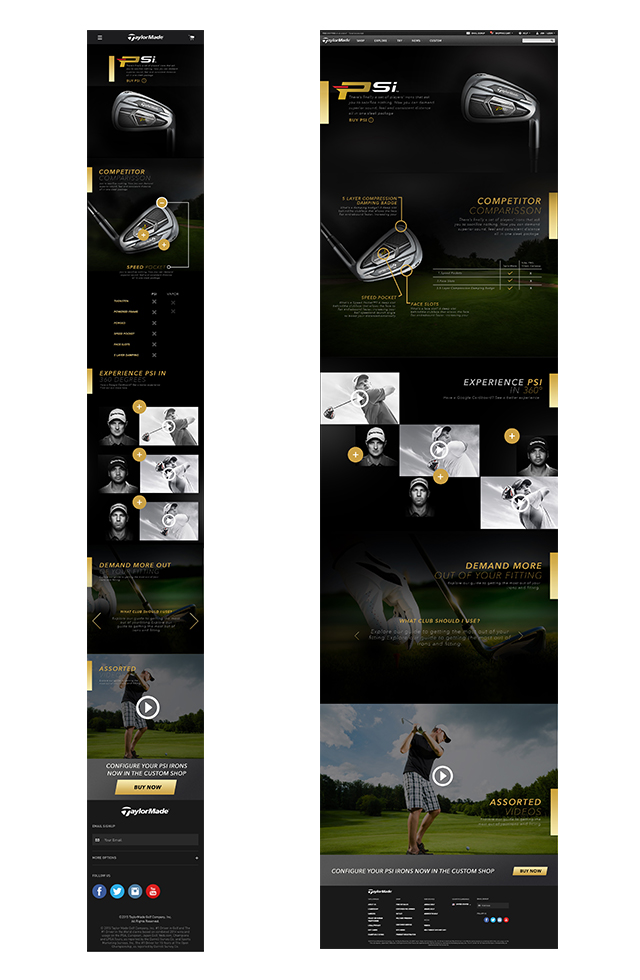

Taylor Made - UX & UI
This project was tasked to the design team at 14four which I was a part of during my internship there. We all had a part in this final product.
Credit to - Tyreil Poosri: Final Designs and Wires
MY ROLE
To design and create an interactive experience for the user, which would showcase the new golfclub. I Personally was involoved in the reasearch, brainstorming, sketching, interface design, and prototyping.
THE PROJECT
The challenge of this project was to find a way to keep users engaged while learning about the club, without losing their interest. Our major point of focus for this was meant to be an explosion view of the club, 360 degree video gallery and a competitor comparison.
We began by researching ways of engaging users throughout an explosive scroll, and different ways of creating a video gallery. We wanted more then just the standard gallery. We knew that we wanted to really capture the users attetion with the video gallery becuase 360 degree video was something very new to the client. After gathering information about the content that we knew the user would be interacting with, we began to sketch out ideas for basic user interactions. It was important to keep in mind not to overcomplcate things. We then came together as a team to decide how to move forward with the interaction design after the client approved wireframes done by another designer.
 DESIGN CONCEPTS
DESIGN CONCEPTS
Once Completing these steps, we then moved into the UI design phase. While designing from the basic wireframes we wanted to ensure that the product was the major focus of the design, so we removed an uneeded distractions from the design. We also had to keep in brand standards and colors. One major things we took into consideration when designing was to ensure that the buttons and touch targets were a large enough to account for users finger size.